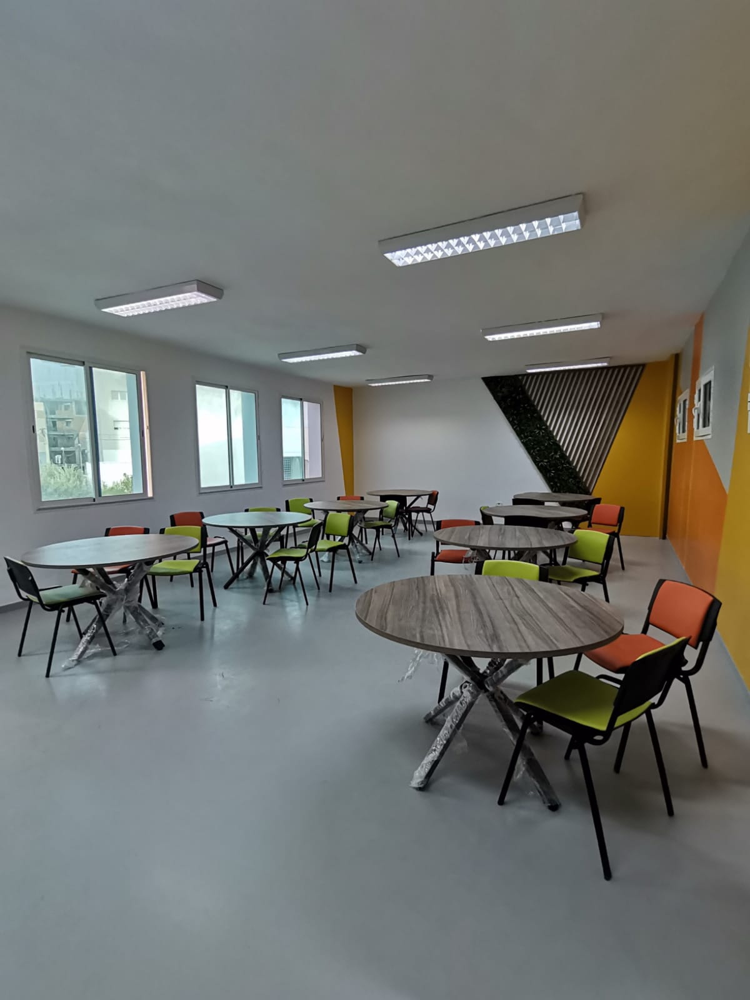

EMPLACEMENT EXCEPTIONNEL
Fondée le 9 juillet 2002, l'ISIMM émerge comme un phare d'excellence éducative sur la côte, alliant un héritage récent à une vision avant-gardiste. Cet établissement d'enseignement supérieur scientifique public repose majestueusement en bordure de la mer, offrant à ses étudiants une toile de fond naturelle aussi inspirante que stimulante. Les bâtiments, fruits d'une architecture moderne, définissent l'infrastructure innovante de l'université, créant un environnement propice à l'épanouissement académique.

L'ISIMM se distingue par une infrastructure d'une qualité exceptionnelle, soigneusement conçue pour favoriser un environnement éducatif propice à l'excellence. Le campus s'étend avec fierté, se composant de deux amphithéâtres modernes qui accueillent les étudiants dans un espace dynamique où l'apprentissage prend vie. Trois blocs imposants, érigés sur trois étages, abritent des salles de classe bien équipées, offrant un cadre idéal pour la transmission du savoir.



La bibliothèque se distingue par son accès à une multitude de ressources éducatives. Avec une collection riche et variée, cette bibliothèque est un véritable trésor du savoir, mettant à la disposition des étudiants une diversité de ressources pour approfondir leurs connaissances.


Dans ce lieu où l'éducation se marie harmonieusement avec l'innovation, l'ISIMM se profile comme un phare de savoir, illuminant le chemin de la découverte et de l'excellence académique. Que chaque étudiant puisse trouver ici l'inspiration nécessaire pour écrire sa propre histoire de réussite, avec les pages de la connaissance comme toile de fond infinie.